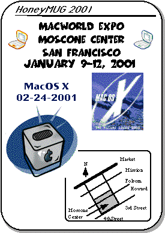

MacWorld Expo 2001 Meeting Notice

Deja Vu
Welcome to HoneyMUG! Actually, the name change from ASACMUG is not really official. I figure that I might as well have some fun before it, like our previous company names, goes the way of the dodo. For the second time in two years, the company we work for is being acquired by another company.
What a difference a few months make. Last summer, Apple was the darling of Wall Street, having recently split its stock, which had held up well after the Internet dot com bubble burst earlier this year. Suddenly, in the space of two months, two earnings downgrades resulted in the stock dropping over 80% from its all-time high.
Apple is failing on many fronts:
Increased inventory, up to 11 weeks
Slow sales of the G4 Cube
Lost sales to the education market
Lower CPU speeds than Wintel
Lack of built-in CD-RW options
Alienation of its education and dealer channels
Not listening to its customers
However, not all the news is bad:
Over 4 billion dollars in cash
MacOS X to be released early in 2001 (we can hope, can't we)
Multiprocessing capabilities
Great industrial design
Loyal and dedicated users
The last three months of 2000 provides a good perspective on where Apple has been in the last three years. The roller coaster ride started by Steve Jobs and the iMac must come to an end, and yet, we know Apple will survive and will have better days ahead – Mac users have seen worse.
{kind=link}
2000 HoneyMUG highlights
We had at least three off-site lunch meetings this year. Attendees included the HoneyMUG Board of Directors, along with Roger and Ming.Our Torrance Art Department finally got a real Macintosh network, thanks to Tesh our new Mac support technician. For now, Macs in certain departments appear to be safe from the Wintel police.
To accentuate the MHz gap Apple finds itself in, Tracy, king of the hill in 1999, remained king of the hill for most of 2000. This November, Ron took the title with his G4/450 Dual-Processor.
Alex is still waiting for his DSL line, not to mention trying to find a Mac that will run the lonely MacOS X Public Beta CD sitting on his desk.
Happy Holidays to all and let the new Millennium begin,
Alex Morando
The Meeting
As usual, we will be having our regular lunch/dinner get-togethers at Macworld. This time, it will be during the first and third days of the show (Tuesday, January 9 at 12:30pm, and Thursday, January 11 at 12:00 noon).Here is an ASCII rendition of the meeting place for MacWorld Expo. We will meet at the lobby of the South Hall of Moscone Center.
The meeting times are
* January 9, 2001 between 12:30-12:45 pm
* January 11, 2001 between 12:00-12:15pm
[ASCII diagram removed]